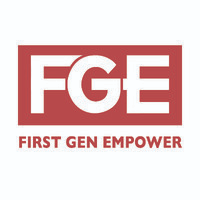

First Gen Empower
First Gen Empower expands educational opportunity for undocumented, first-generation, and low-income students. The nonprofit offers training, workshops, consulting, and public resources for educators, counselors, and institutions.
Programs and support
- Educator training
- Undocu-Ally workshops
- BRIDGE certification
- Institutional consulting
- Student workshops
- Advising guides
- Mixed-status family resources
- Career resources
- Educational resources
- Policy resources
- First-generation stories
Why we’re sharing these resources
We’re highlighting First Gen Empower to help students, families, and educators find support alongside the stories they read here.